博士毕业论文解析| 基于空间转录组学技术对原发性肝癌空间异质性的研究
原文：https://mp.weixin.qq.com/s?__biz=MzAwMzIzOTk5OQ==&mid=2247528663&idx=1&sn=460a3f22e4ea1dd77b57ec07a7e716f0&chksm=9b3c0987ac4b809128acec7f593c251f5993cb1de5bd1ea6e243b00fb952b705de6b1ac34cf8#rd 合集：空间转录组
博士毕业论文

这篇是来自海军军医大学的名为“基于空间转录组学技术对原发性肝癌空间异质性的研究”的文章【1】，于2021年11月毕业，下载次数1670次，该毕业论文全长107页，掐头去尾(去除目录、声明、致谢等内容)共92页内容（显然生信人的论文不可能只有26页）。这位博士的专业为外科学，应该是一位临床医生，6年读完硕博也算效率很高了。在学期间以第一作者或共同第一作者共发表了3篇SCI，其中一篇更是发表在了《 Science Advances 》.(IF=14.822)。
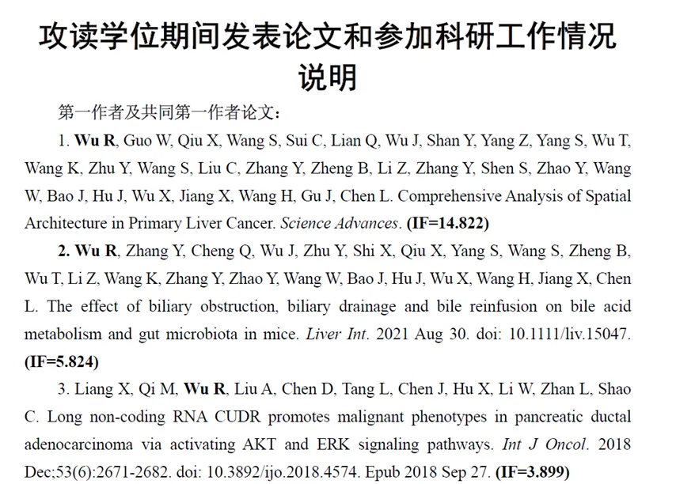
论文中涉及的疾病是原发性肝癌，其是一种高度异质性的肿瘤，而肿瘤异质性主要包括时间异质性和空间异质性两个维度，针对空间异质性作者使用空间转录组学（Spatial transcriptomics，ST）进行分析。接下来，我们来看一下具体内容。首先作者采集7例PLC患者肿瘤组织标本，包括4例肝细胞癌、1例胆管细胞癌、1例混合型肝细胞胆管细胞癌以及1例合并门静脉癌栓的肝细胞癌肿瘤和癌栓样本；局部取样和整体拼接获取共21个不同空间区域的样本进行ST分析。
接着，作者评估了ST的测序稳定性及可靠性，通过测序位点的直径与对应的H&E 染色图像比对评估出每个位点大致包含的细胞数量。同时，作者对于测序数据进行统一流形逼近与投影技术（Uniform Manifold Approximation and Projection，UMAP）降维处理后鉴定细胞亚群，并对特定组织的标记基因表达进行展示来验证ST数据可靠性。


接下来就是常规的对于测序数据进行UMAP分析鉴定亚群，并对ICC-1癌症中的亚群进行相关性分析。


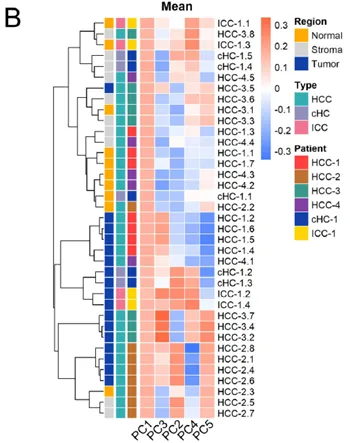
这里，作者探究了原发性肝癌边界区域的免疫微环境和实质细胞功能的空间异质性特点。首先肿瘤纤维包膜的存在与两侧的免疫细胞分布相关，以纤维包膜存在与否分为两组并进行免疫微环境分析，分别展示了免疫细胞比例及相关基因表达水平，随后分析了肿瘤实质细胞的分布位置及肿瘤相关信号通路变化趋势。
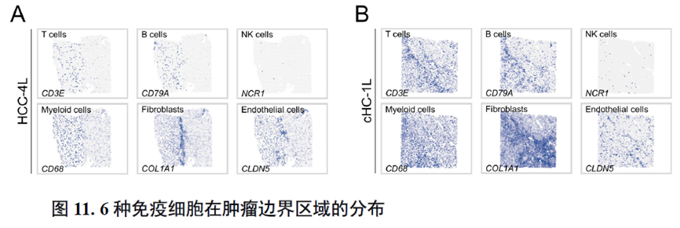
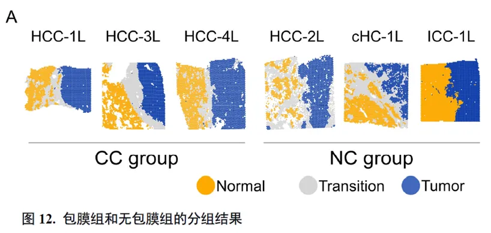
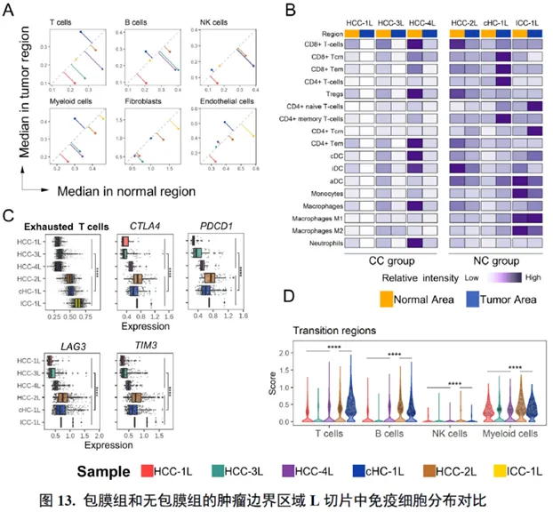
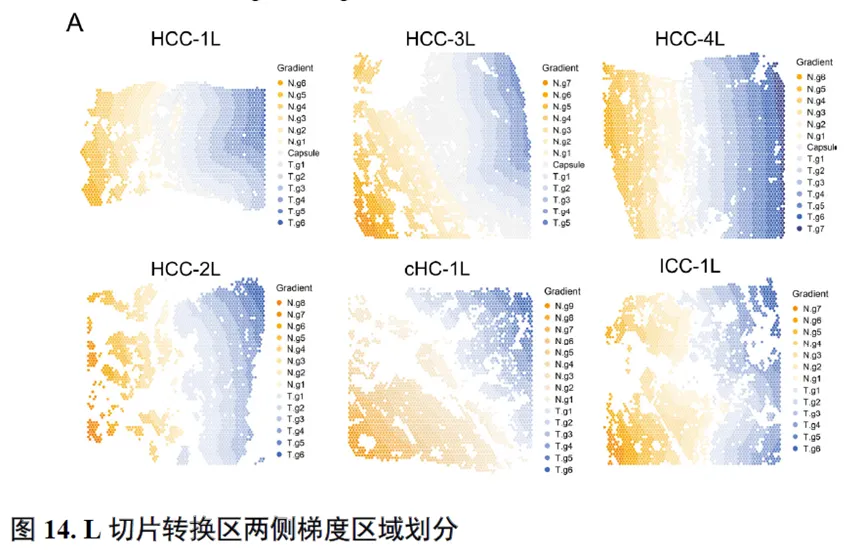

接下来，作者使用GSVA分析进行了各个肿瘤内部亚群的功能分析，并选择区域性最为明显的HCC-1T进行肿瘤内部亚群之间的差异分析，同时通过TCGA和HCCDB数据库进行肿瘤内部亚群的预后分析；通过CellPhoneDB进行配体受体表达水平分析，作者发现不同亚群间会进行细胞通讯。比较不同亚群的拷贝数变异（Copy number variations，CNV），发现它们可能来自同一个克隆。
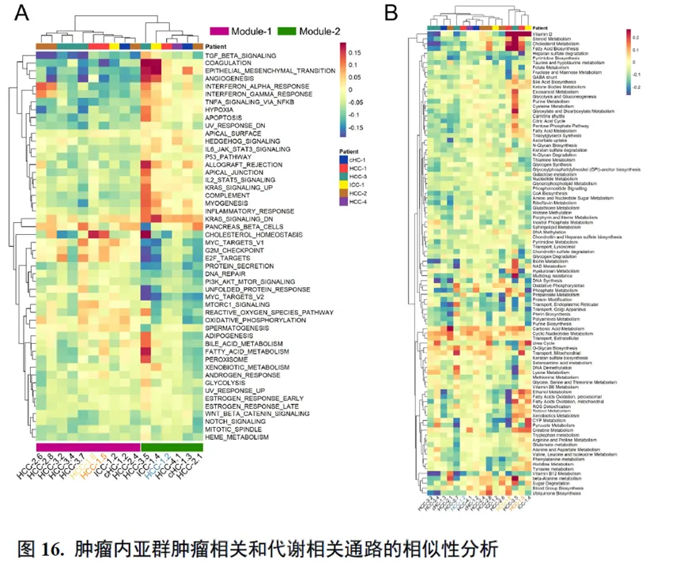

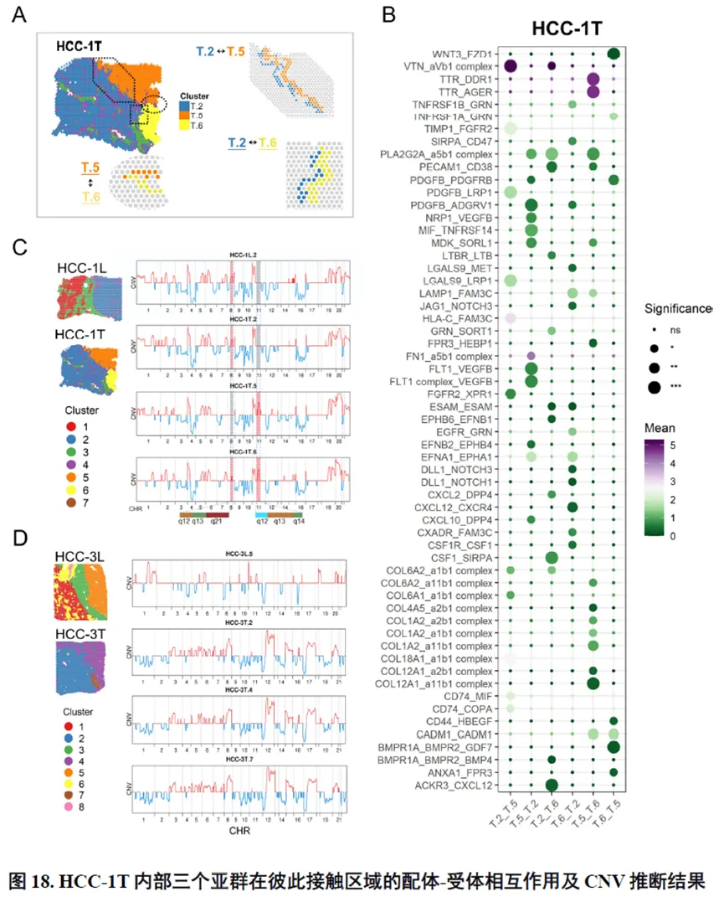
以上数据展现了原发性肝癌边界和内部位置不同亚群的空间特征，进一步作者进行了一例完整肿瘤平面的空间异质性分析，主要通过亚群鉴定，基因表达，肿瘤相关通路活性及梯度变化进行展示。
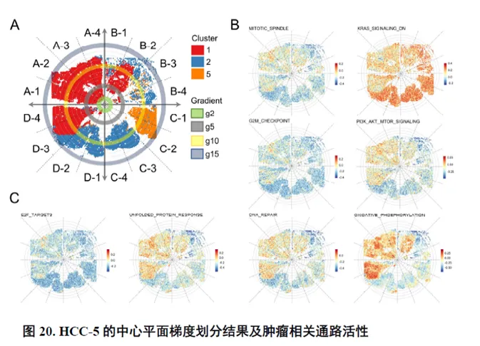
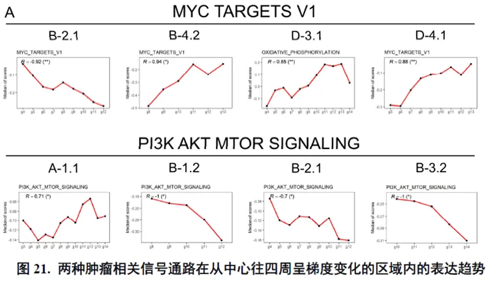
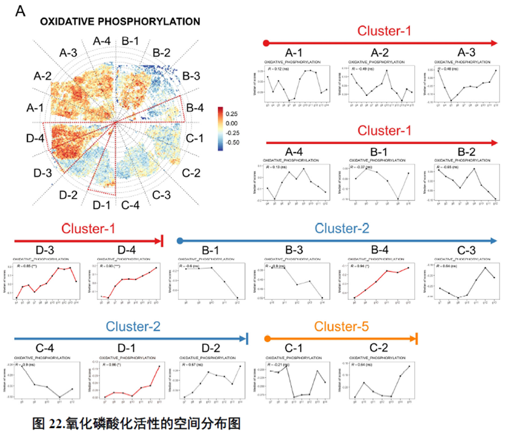
进一步，通过肿瘤干细胞（Cancer stem cell，CSC），一类可以引起肿瘤内部异质性的细胞，检测其标志物在不同切片中的分布特点，发现CD47+和PROM1+的CSC在HCC中的高度富集与肿瘤的侵袭和迁徙增加相关。


最后，作者通过HCC-5转录组数据中显示的极其微小不同于周围组织的非肿瘤实质细胞亚群鉴定出了三级淋巴结构（TLS）分布及其内部免疫细胞亚群分析，同时发现TLS的评分与肿瘤大小、分期和预后存在相关性，为在临床中评估患者预后提供了新的指标。
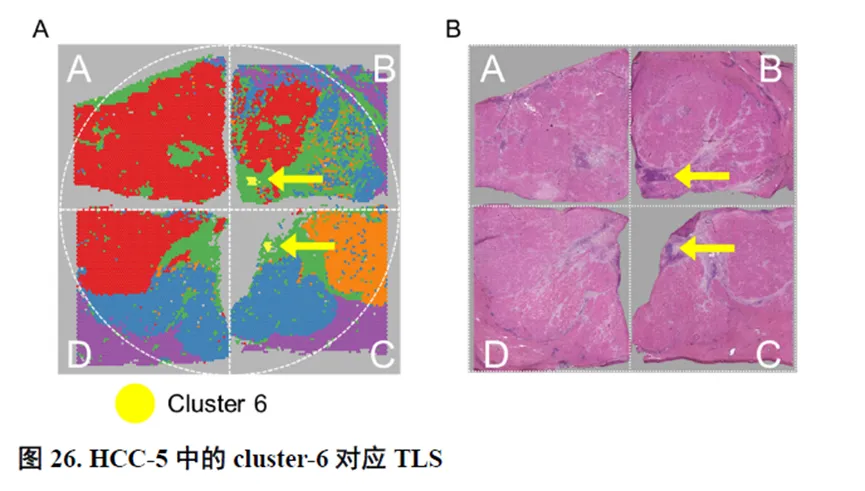
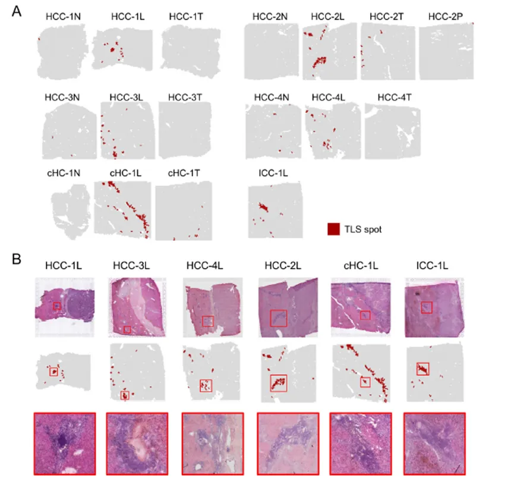


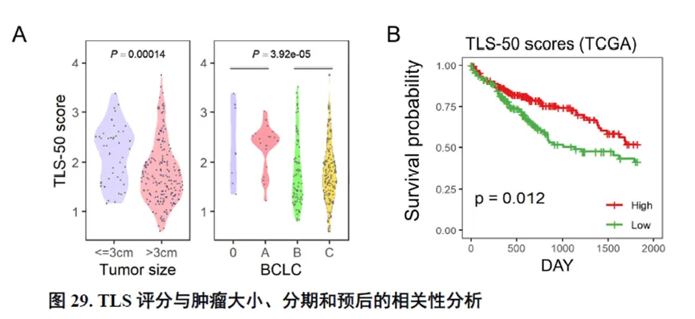
这篇博士论文通篇是对肿瘤的空间转录组学分析，并没有进行实验验证，不过在结尾处进行了疾病相关三级淋巴结构的鉴定，具有一定的临床意义，可能也是能够发14分的主要原因。
如何联系我们

 留一个领取资料、免费两周学习版服务器的微信号[Biomamba_zhushou]，方便各位随时交流。同时我们也构建了交流群矩阵，欢迎大家入群讨论。
留一个领取资料、免费两周学习版服务器的微信号[Biomamba_zhushou]，方便各位随时交流。同时我们也构建了交流群矩阵，欢迎大家入群讨论。
大家可以阅读完这几篇之后添加给生信入门初学者的小贴士 如何搜索公众号过往发布内容
已有生信基地联系方式的同学无需重复添加

 您点的每个赞和在看，我都认真当成了喜欢
您点的每个赞和在看，我都认真当成了喜欢